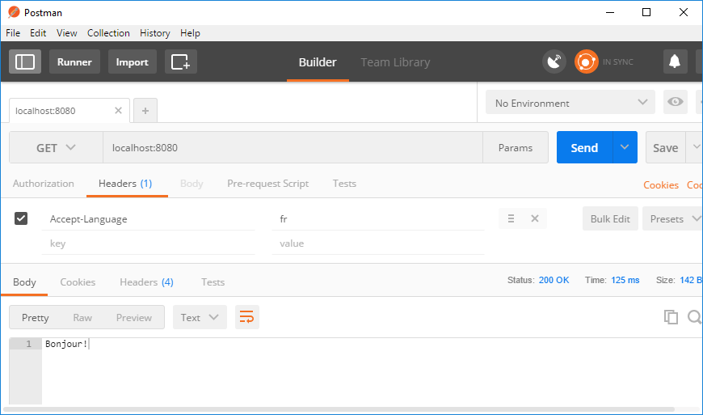

Node and Express 1
This lab introduces node.js as a server-side technology. You will use node.js to run javascript programs on the "server-side" which are capable of servicing HTTP requests.
You will learn how to:
- Create and use a remote repo on Github
- Set node up as a HTTP server.
- Use Node's built in http module to create a simple HTTP server.
- Node's packaging system.
- How to host your existing web resources in a Node.js HTTP server.
- How to do a simple route for a HTTP request.
Get Git

You will probably have git from the previous labs. If not, follow the instructions for your operating system.
Windows OS
If you're on Windows, download the GitHub Desktop, from here which includes Git, and use the Git Shell for your terminal.
Mac
You can install Git automatically. To do this, open the Terminal application from spotlight and type git. This will prompt Git to install the rest of the command line tools for Git. This should only take a few minutes. It will ask if you would like to download Xcode, which you can ignore.
Linux
You can use the package-management tool that comes with your distribution. For Fedora use:
$ sudo yum install git-allFor Debian use:
$ sudo apt-get install git-allTell Git who you are
You will need to configure git with your identity so that it can record your git activity such as repo creation and changes. To set a global identity for all repos on the machine, enter the following:
$ git config --global user.email "your@email.com"
$ git config --global user.name "Your Name"Clone a Repository
Clone the samples repository
Select a location on your machine where you would like to keep the code examples taken from the weekly talks. Open a terminal window in that location and clone the samples repository:
git clone https://github.com/fxwalsh/ewd-examples-2019.gitThis should create a new folder called ewd-examples-2019. Open the folder and you should see the node samples from the lecture slides. We will use this repository for our example code as the module progresses. You will need to pull the repository from time to time to get the latest code examples from the lectures.
Create a repository
You can think of a repository as a project folder with all the related files inside of it.
 You intialise a folder as a Git repository and Git will start tracking the changes to that folder. Any files added, removed or changed are tracked and time stamped by Git. That's version control.
You intialise a folder as a Git repository and Git will start tracking the changes to that folder. Any files added, removed or changed are tracked and time stamped by Git. That's version control.
You're going to create a new folder and initialize it as a Git repository. Make a new folder by opening a terminal window at a suitable location on your machine. Enter the follwoing commands to make a new directory called ewd-node-labs-2019 and then change directory into it :
$ mkdir ewd-node-labs-2019
$ cd ewd-node-labs-2019Now initialise the folder as a Git repo:
$ git initTo check that it's a Git repository, type git status and if returns something like 'On branch master ....', you've got a new local repo!
Add to the repository
Open a text editor. Now write a couple of lines of text:
# Node Development Practical Labsand save the file as readme.md in the ewd-node-labs-2019 folder.
Status, Add and Commit Changes
Next check the status of your repository to find out if there have been changes. In the terminal, you should still be within the 'ewd-node-labs-2019' directory. Enter git status for a report on any changes listed:
$ git status
You can see that the readme.md file is untracked at the moment. Add it to the files you'd like to track with Git.
$ git add readme.mdFinally, commit those changes to the repository's history with a short description of the updates.
$ git commit -m "Created the readme file"Make More Changes
Now add another line to readme.md and save.
In terminal, you can view the difference between the file now and how it was at your last commit using git diff.

Now, what you just learned above, commit this latest change.
Github
The repository you've created so far is just on your computer, which is handy, but makes it pretty hard to share and work with others on.
Create a GitHub Account
GitHub is a website that allows people everywhere to upload what they're working on with Git and to easily work together.
Visit github.com and sign up for a free account.
Add username to Git
Add your GitHub username to your Git configuration, which will be needed in order to push the upcoming labwork to Github. Save it exactly as you created it on GitHub — capitalise where capitalised, and remember you don't need to enter the "<" and ">" .
Add your GitHub username to your configuration:
$ git config --global user.username <YOUR_GITHUB_USERNAME>Remote Repository
When you put files on GitHub, that copy lives on one of GitHub's servers. This makes it a remote repository because it is not on your computer. You need to push your local (on your computer) changes to it, you keep it up to date.
Others can always get the latest from your project by pulling your changes down from the remote (and onto their computer). In fact, this is how you will get the weekly updates to the code examples repo. It is also how you can collaborate with others.
Create a Remote Repository
You want to sync your local version with one stored on GitHub.com called the remote version. So first create an empty remote repository on GitHub.com.
Go to github.com, log in, and click the '+' in the top right to create a new repository.
Give it a name that matches your local repository's name, ewd-node-labs-2019, and a short description.
Select the following options:
- make it public or private as you see fit.
- don't create a readme.md (you have one already in your local repo).
- create a .gitignore and select the Node option in the dropdown.
Click create repository and you should be taken to your new repo page.
- Copy the URL from the "clone or download" option on the repo page. You will need the URL of the repo to connect your local repo to this remote repo.

Connect your Local to your Remote
Now you've got a remote repository on GitHub.com, back in your terminal in 'ewd-node-labs-2019' folder, you want to tell Git the location of the remote version on GitHub's servers. You can have multiple remotes so each requires a name. For your main one, this is commonly named origin.
$ git remote add origin <YOUR_URL_FROM_GITHUB>Your local repository now knows where your remote one named 'origin' is (i.e. on GitHub). T
A note:
If you have GitHub for Windows on your computer, a remote named 'origin' is automatically created. In that case, you'll just need to tell it what URL to associate with origin. Use this command instead of the 'add' one above:
$ git remote set-url origin
Pull down the changes on the remote repo
You created a .gitignore file on the remote repo. You need to pull this change into your local repo. Git has a branching system so that you can work on different parts of a project at different times but by default the first branch is named 'master'. When you pull (and push) from a project, you tell Git the branch name you want and the name of the remote that it lives on. - Enter the following command to pull the remote changes into the master branch on your local repo:
$ git pull origin master --allow-unrelated-histories- The
--allow-unrelated-historiesneeds to be included as the local and remote repositories were created independently and have some commits.
Now we will push your local work (i.e. the readme.md) to the remote repo.
Push Work to your Remote
Next you want to push (send) everything you've done locally to GitHub. Ideally you want to stay in sync, meaning your local and remote versions match.
Similar to a pull, when you push from a project you tell Git the branch name you want to push and the name of the remote that it lives on.
In this case, we'll send our branch named 'master' to our remote on GitHub named 'origin'.
$ git push origin masterNow go to GitHub and refresh the page of your repository. Everything is the same locally and remotely. You should see the following in your local repo:
Congrats on your first public repository! You will use this repository to contain the rest of your lab work.
Development Dependencies
We will now set up and configure a development environment for Node.js.
package.json
If you're developing a Node program or library for deployment, it's standard practice to include a package.json file. This file is the manifest of the Node project and is located at your project root. It contains various information specific to your project such as module dependencies and scripts.
- Create a new folder called node_lab1 in your new repo.
- Open a terminal window in node_lab1 and enter the following command:
npm init- You will be prompted for details. Enter the following:
name: (lab1) node-lab1
version: (1.0.0)
description: node lab 1
entry point: (index.js)
test command:
git repository:
keywords:
author: YOUR_GIT_USERNAME
license: (ISC)You should now see a package.json file in the lab directory with these details.
Babel
We will be writing our Javascript using ES2015 so we require transcoding before our Node app runs. We need to bring in some babel packages to handle this.
- Enter the following command to get the relevant babel package and relevant presets.
npm install --save-dev babel-cli
npm install --save-dev babel-preset-envThe --save-dev will write this dependency to the development section of the package.json. Have a look at the package.json file and you will now see the dev dependency on babel as highlighted below:
- To configure babel to transcode from es2015, create a file called .babelrc in the node-lab1 folder and enter in the following:
Now have a look at the package.json file. You'll see that the babel development dependencies are specified.{ "presets": ["env"] }
Nodemon
When we change things in a Node.js project, a restart is required for the changes to be reflected in the running process. This can be very time consuming. Instead of manually restarting Node, we will install the nodemon package as a development dependency, which can monitor our files and auto-restart Node for us when we save changes to disk.
- Install Nodemon:
npm install --save-dev nodemon
Commit it
Now that we have a our basic setup and configuration complete,this is a good time to commit your changes to git.
- In the directory ewd-node_labs_2019 run the following:
git add --all git commit -m "set up and initial configuration"
You should NOT see any output indicating changes ignored file and folders, for example the node_modules. We do not need to track changes here as it's contents are specified in the package.json.
The "Hello World" HTTP Server
We will be using node as a web API platform. In this step we'll set up a simple HTTP server that responds to every request with the plain text message "Hello World".
App Config
As discussed in class, one of the advantages of NPM is the wide availability of handy utility packages that follow accepted best practice. App configuration management and environment variables are common to many apps. When using public, cloud based repos you should use best practice approaches to keep sensitive parameters such as private keys and passwords safe.
Dotenv is a zero-dependency module that loads environment variables from a .env file into process.env. In doing this Dotenv stores configuration in the environment separate from code is based on "The Twelve-Factor App" methodology. This simple application just needs some typical configuration details, for example the port and host info.
Install Dotenv as a normal, runtime dependency
npm install dotenv --saveCreate a new file in your application root folder called .env and add the following content:
NODE_ENV=development PORT=8080 HOST=localhost
As you could be putting sensitive stuff in the .env file, you should NOT commit your .env file to version control. It should only include environment-specific values such as database passwords or API keys used by your server-side API. Also, your production database should have a different password than your development database.
To ensure this is the case, do the following:
- Open .gitignore file in you node-labs-2018 folder. Check that it contains the following entry:
# dotenv environment variables file .env
HTTP service
- In the node-lab1 create a new file called index.js with the following contents:
// Load the http module to create an http server.
import http from 'http';
import dotenv from 'dotenv'
dotenv.config()
const port = process.env.PORT
// Configure our HTTP server to respond with Hello World to all requests.
const server = http.createServer((req, res) => {
res.writeHead(200, {'Content-Type': 'text/plain'});
res.end('Hello World!');
});
server.listen(port);
// Put a friendly message on the terminal
console.log(`Server running at ${port}`);In the first line, we import the http core module and assign it to http. Next we assign the variable server from the http.createServer(...) function. The argument passed into this call is the function that is called whenever an http request comes in.
Finally we call server.listen(config.port) to tell node.js the port on which we want our server to run.
Startup Script
We want to specify a script to start up the Node server, which will be the index.js file. So our start script would be node index.js. However, since we want the code to be transcoded using babel and started with nodemon, we will add a nodemon execution wrapper and use babel-node instead of the node command.
- Find the
scriptsproperty in the package.json file and replace it with the following:
....
"scripts": {
"start": "nodemon --exec babel-node index.js"
},
....To run the server open a terminal/command window in the node-lab1 folder and enter:
npm startYou should see output smilar to the following:
 Now open your browser to 'http://localhost:8080'. You should see the following:
Now open your browser to 'http://localhost:8080'. You should see the following:

The connection function is invoked with a req and res object. The req object represents the HTTP request and is a readable stream that emits 'data' events for each incoming piece of data (like a form submission or file upload). The res object represents the HTTP response and is used to send data back to the client. In our case we are simply sending a 200 OK header, as well as the body 'Hello World'.
Leave the app running for the next section.
Nodemon in Action
Now that your node app is running using Nodemon, any saved changes to your source code(index.js) will cause the app to restart automatically.
- Change
index.jsto return "Hello EWD!" in the response and take a look at the terminal. You should see the console output indicating a restart. However, you will require a refresh in the browser to see the new "Hello EWD!" message.
Linting
It'd be nice to get feedback on the quality of your Javascript code as you write it. ESLint is a tool for identifying and reporting on patterns found in ECMAScript/JavaScript code. It can be used to detect syntax errors in the editor and also to enforce code styles, for example the use of semicolons at the end of each statement.
Install ESLint as follows:
npm install --save-dev eslint babel-eslintTo configure ESLint, enter the following at the command line:
npx eslint --initAnswer the resulting questions as follows:

You should now see a file called .eslintrc.json in the node-lab1 folder.
- Open .eslintrc.json and replace the
rulesproperty with the following:
"rules": {
"semi": 1,
"no-console": "off"
}The .eslint.json file specifies that we wish to lint ES6 Javascript in module format (uses imports and exports). We also specify the environment is Node.js with associated global variables and Node.js scoping. Finally, we add some rules that warn if you leave out a semicolon and permit the use of console.log() (we should really use a proper logging module...).
You've now set your project folder up for linting your Javascript files.
NOTE: These linting rules are to keep your code style consistent. If you already use JS and you wish to follow other rules (with justification) then feel free to impelement them here. For example, alot of JS developers do not use the semicolon at the end of each statement (as you've seen in index.js, you don't need it!)
How bad is your code?
Now lets check your code using ESLint on the command line.
- Run the following command to lint your code:
The rules will warn you if any statement does not end with a semicolon. The linter should highlight this and you should see the following output: You can fix manually or use the commandnpx eslint index.jsnpx eslint index.js --fixto resolve the problems(if the linter suggests it). When the code is in good order, the linter should return nothing. Nice code!
Linting in VS Code
If you use the VS Code editor you can install the ESLint Extension so that the editor will highlight issues as you type.
Do control-shift-x search for "ESLint" and install. It will autmatically pick up the ESLint config of your folder...
Commit your changes
- Commit the changes you have just made using git.
git add -A git commit -m "node-lab1, simple server"
The Module System
Node.js provides a simple module system that lets you structure your program into different files. In our index.js example, we use the core http module to create our HTTP service. You can also write your own modules. When creating a module, this can be interpreted as moving all related functions into a file.
- Create a new file called 'greeting.js' in the same folder with the following content:
const greeting = {
en: "Hello World!",
fr: "Bonjour!"
}
export default greeting;- Update your index.js file as follows:
// Load the http module to create an http server.
import http from 'http';
import dotenv from 'dotenv';
import greeting from './greeting.js';
dotenv.config();
const port = process.env.PORT;
// Configure our HTTP server to respond with Hello World to all requests.
const server = http.createServer((req, res) => {
let lang = req.headers['accept-language'];
const defaultLang='en';
if (!greeting[lang]) lang=defaultLang;
const response={
lang: lang,
message: greeting[lang],
};
res.writeHead(200, {'Content-Type': 'text/plain',
'Content-Language': response.lang});
res.end(response.message);
});
server.listen(port);
// Put a friendly message on the terminal
console.log(`Server running at ${port}`);Now test your file again using a browser. The export expose greeting to other modules that require them. To access the exported functions in our simple server, we can load the greeting module using the require function in import greeting from ('./greeting');. The server gets the accepted language from the requesting process using req.headers["accept-language"] . To set the accept-language HTTP header of the request:
- install a suitable REST client. This lab will opt for Postman.
- Perform a HTTP GET request to localhost:8080 with
Accept-language=fr.
You should see the french representation for the greeting returned in the response.

As you will see, the core modules give you very few modules. Most of the real power in Node.js is contained in the third party modules available through the Node Package Management system(NPM).
Commit your changes
- Commit the changes you have just made using git.
git add -A git commit -m "node-lab1, greeting module added"
Express Applications
We'll now add some static content to our web server. Up to now you've used http-server which is fine for prototyping HTML. We'll now move to Express, a richer web app package and provides a nice high level approach to serving up static content. It's based around the idea of creating an Express "app" that you can easily configure. One of the configuration options allows you to specify the location of your publicly available content such as static HTML, CSS, client-side Javascript files etc.
Express
To create an Express app, we need to install it as a normal dependency.
- Install the express package.
npm install --save express
The --save flag will write this dependency to package.json.
- In your node-lab-1 folder, create the following folder structure:
+public |-javascript |-stylesheets - Get the solution to the html/css lab and place the files directly into the public folder(the index.hmtl file should in the public folder).
- In node-lab-1, replace the contents of index.js with the following javascript:
import dotenv from 'dotenv';
import express from 'express';
dotenv.config();
const server = express();
const port = process.env.PORT;
server.use(express.static('public'));
server.listen(port, () => {
console.info(`Server running at ${port}`);
});- Now test the application as before in a browser. It should display the default resource (index.html) from the public folder.
Simple Routing using Express
Express gives us an easy way of mapping specific URL paths to Javascript functions. You will now replicate the functionality from the "Hello World" section so that a HTTP GET request for the URL path '/greeting/' will respond with "Hello World". Modify the index.js by adding an app.get([route],[callback function]).
- Modify the index.js script to include a route for /greeting that responds with "hello world".
import dotenv from 'dotenv';
import express from 'express';
import greeting from './greeting';
dotenv.config();
const app = express();
const port = process.env.PORT;
app.use(express.static('public'));
// add route for /greeting
app.get('/greeting', (req, res)=>{
let lang = req.headers['accept-language'];
const defaultLang='en';
if (!greeting[lang]) lang=defaultLang;
const response={
lang: lang,
message: greeting[lang],
};
res.writeHead(200, {'Content-Type': 'text/plain',
'Content-Language': response.lang});
res.end(response.message);
});
app.listen(port, () => {
console.info(`Server running at ${port}`);
});Commit and Push to Github
Commit your changes using git as before and push your changes to your remote repository.
git add -A
git commit -m "node1-lab, changed to express app"
git push origin masterContacts API
Ultimately we would like our API to use a database such as Mongo and allow for a more realistic API that can cope with large volumes of data you would expect in a production environment.
Create a new folder called api in node-lab-1. Create another folder called contacts in api. Your folder structure should look as follows:
+node-lab-1
|-api
|-contactsWe will use test data for the time being.
- Create a new file called contacts.js in the contacts folder and add the following code:
export const contacts = [
{
'name': 'Contact 1',
'address': '123 Test St',
'phone_number': '132-3212',
},
{
'name': 'Contact 2',
'address': '23 Main St',
'phone_number': '934-4329',
},
{
'name': 'Contact 3',
'address': '4 Lower St',
'phone_number': '432-5832',
},
{
'name': 'Contact 4',
'address': '49 Upper Street',
'phone_number': '934-4290',
},
];- Also in the contacts folder, create a new file called index.js and enter the folowing javascript:
import express from 'express';
import {contacts} from './contacts';
const router = express.Router(); // eslint-disable-line
router.get('/', (req, res) => {
res.send({contacts: contacts});
});
export default router;- Now update index.js in the root folder to use the new contacts routing script by replacing the contents with the following code
import dotenv from 'dotenv';
import express from 'express';
import contactsRouter from './api/contacts';
dotenv.config();
const app = express();
const port = process.env.PORT;
app.use(express.static('public'));
app.use('/api/contacts', contactsRouter);
app.use(express.static('public'));
app.listen(port, () => {
console.info(`Server running at ${port}`);
});Now test the application again by doing a HTTP GET on localhost:8080/api/contacts. You should see something simlilar toe the following:

Challenge
- Try to include in server-side route for the Hacker News lab you did last week. Follow the same procedure as above.
hint: create a new folder in api for Hacker News. Create a routing script and update index.js to add the Hacker News route.